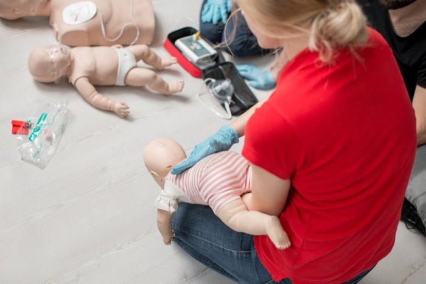
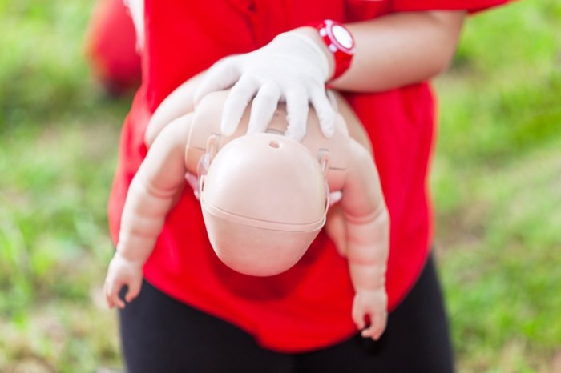

Há uma diferença entre essas duas condições. A asfixia é rara, mas grave, a garganta é parcialmente ou completamente bloqueada por algum líquido, alimento ou objeto, o bebê precisará de ajuda (manobra de heimlich) para fazer o deslocamento do alimento que ficou preso e voltar a respirar. É importantíssimo que todos os cuidadores aprendam a realizar essa manobra.
O reflexo de gag é uma ação reflexa para prevenir a asfixia, é a forma natural do corpo expelir agentes ou objetos estranhos da cavidade oral. É uma contração muscular na base da língua e na parede faríngea que ocorre quando algo toca o céu da boca, a parte de trás da língua ou gargata, ou a área ao redor das amígdalas. Ele irá acontecer com frequência no início da introdução alimentar.
É muito provável que seu bebê já esteja fazendo testes, levando até a boca suas mãos e objetos, com o objetivo de entender o que acontece e quais são seus limites internos. Quanto mais ele treinar, mais maturidade vai ter para saber onde pode colocar o alimento e menos reflexo ele terá.
É importante que você entenda que o reflexo de gag é um dispositivo de segurança natural de todo bebê.

